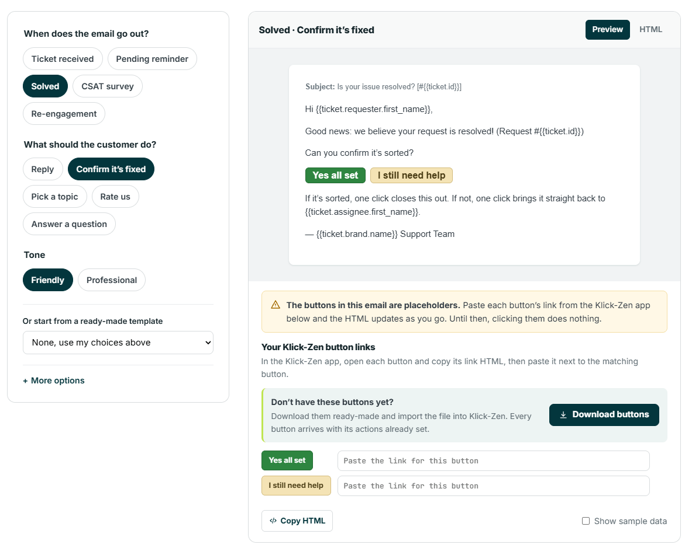
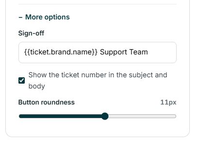
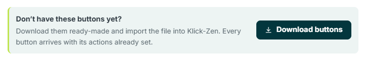
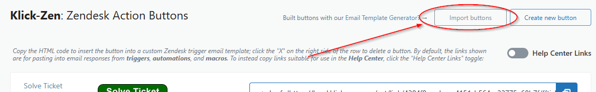
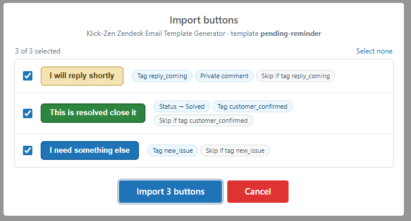
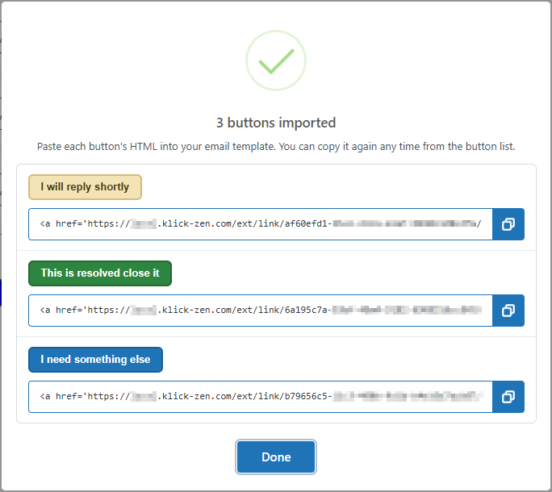
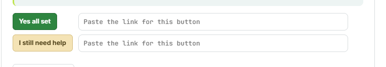
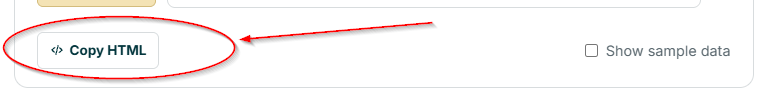

Klick-Zen Online Template Generator
The free Zendesk email template generator writes a ready-to-paste Zendesk email with Klick-Zen buttons already laid out in it. You pick when the email goes out and what you want the customer to do, and the generator writes the subject, the message, and a set of buttons that fit.
The buttons in the generated email start out as placeholders. To make them work, each one is linked to a real Klick-Zen button in your account. If you don’t have those buttons yet, the generator can give you a button file that creates all of them in Klick-Zen in one step, with their actions already set.

The whole process looks like this:#
- Build the email in the generator
- Download the buttons (skip this and Step 3 if you have already created the buttons)
- Import the buttons into Klick-Zen
- Paste each button’s link back into the generator
- Copy the finished HTML into a Zendesk trigger or automation, and add any suggested Zendesk triggers
Step 1: Build the email in the generator
Open the email template generator and choose the options on the left-hand side. The preview on the right updates as you go.
- When does the email go out? The moment in the ticket’s life the email is for: Ticket received, Pending reminder, Solved, CSAT survey, or Re-engagement
- What should the customer do? The question the buttons answer: Reply, Confirm it’s fixed, Pick a topic, Rate us, or Answer a question
- Tone: Friendly or Professional wording
- Or start from a ready-made template: instead of the choices above, start from one of the ready-made templates (approvals, refunds, escalations, appointment confirmations and more)
Under More options you can also change the sign-off, choose whether the ticket number appears in the subject and body, and set the Button roundness:

Use the Preview and HTML tabs to switch between the email as the customer will see it and the code you will paste into Zendesk. Check Show sample data to replace placeholders such as {{ticket.requester.first_name}} with example values in the preview.
To see exactly what each button will do to the ticket, open What each button does under “Making it a working email”. It lists every button with its ticket actions, along with any Zendesk triggers the workflow needs.
Already have the buttons you need in Klick-Zen? Skip ahead to Step 4 and paste their links in
Step 2: Download the buttons
Under Your Klick-Zen button links, click Download buttons:

Your browser saves a button file named after the template, for example klick-zen-buttons-solved-confirm-it-s-fixed.kzb. The file contains one button for every button in the email, including:
- The button text, colors, and roundness
- The button’s actions (for example Set Ticket Status → Solved and Add Ticket Tag → customer_confirmed)
- A Tag Exists exception that stops the button from acting a second time on the same ticket (see How do I ensure a button is only clicked once?)
The file contains the buttons only, not the email itself. Keep the generator open in your browser tab; you will come back to it in Step 4.
Don’t open or edit the .kzb file. Klick-Zen will reject a file that has been changed. If you need different buttons, change your choices in the generator and download a new file
Step 3: Import the buttons into Klick-Zen
- Open the Klick-Zen app from the left sidebar in Zendesk
- From the main left-hand menu, click Available KlickButtons
- Click Import buttons in the top-right corner, next to “Create new button”:

- Choose the
.kzbfile you downloaded in Step 2
Before you import, ensure that the toggle option “Help Center Links” is NOT toggled “on”. The import summary shows each button’s HTML in whichever form the toggle is set to, and Help Center links don’t work in emails. The "Help Center Links" toggle will automatically set itself to OFF when you begin a button import.
The Import buttons window lists every button in the file, with a preview of the button and a short summary of what it does:

- Each button’s actions are shown as labels, such as Status → Solved or Tag customer_confirmed
- Exceptions are shown as Skip if tag ...; the button takes no action when the ticket matches
- All buttons are selected by default. Uncheck any button you don’t want, or use Select all / Select none
- If a button with the same name already exists in your account, the new one is saved with a number added (for example Yes all set-1), so your existing buttons are never overwritten
- Anything Klick-Zen had to adjust during the import appears in a note at the bottom of the window
Click Import (it shows the number of selected buttons, for example “Import 2 buttons”).
When the import finishes, a summary window lists each new button with its HTML snippet and a copy icon:

Leave this window open; these snippets are what you paste into the generator in the next step. If the import suggests any Zendesk triggers, they are listed here too. Click Done when you are finished. The new buttons now appear in Available KlickButtons like any other button, and you can edit them as usual.
Imported buttons arrive with the generator’s colors, not the colors from your Default Button Template. To put them on brand, edit each button’s appearance after importing. The changes apply everywhere the button is used.
How custom fields and statuses are matched
Ticket fields and statuses are different in every Zendesk account, so the button file describes them by name and Klick-Zen matches them to your account during the import:
- Update Ticket Field actions (for example the Rate us buttons set a
csat_ratingfield) are matched to one of your ticket fields by its title. The match ignores capitals, spaces, and punctuation, so a field titled CSAT Rating matchescsat_rating. If no field matches, that one action is left off the button and the import note tells you which button it was. Create the field in Zendesk first, or edit the button after importing and add the action yourself - Set Ticket Status actions are matched to your account’s default status for that category (Open, Pending, On-hold, or Solved), including custom ticket statuses
If the generator’s “What each button does” list mentions a field (for example field csat_rating = good), create that ticket field in Zendesk before you import, so the action is matched automatically. For drop-down fields, the values the button sets (such as good) must match the field options’ tag values.
Step 4: Paste each button’s link into the generator
Back in the generator, under Your Klick-Zen button links, there is a box next to each button. Copy each button’s HTML from the import summary window (Step 3) and paste it into the box next to the matching button:

As you paste, the HTML updates and the preview switches from the placeholder to your real Klick-Zen button image. Once every box has a link, the note above the boxes changes to “All buttons are linked.”
You can also get a button’s HTML at any time from Available KlickButtons in Klick-Zen, by clicking the copy action next to the button’s HTML snippet. The generator accepts either the full HTML snippet or just the link URL.
When copying from Available KlickButtons, ensure that the toggle option “Help Center Links” is NOT toggled “on”. Help Center links only work on the Help Center request page, not in emails.
Step 5: Add the email to Zendesk
-
Click Copy HTML under the preview

-
The generator shows where the email belongs under Making it a working email. Emails sent when something happens to a ticket (received, solved, confirmed) go in a trigger; emails sent after a period of time (pending for 48 hours, five days before closing) go in an automation
-
In Zendesk Admin Center, go to Objects and rules → Business rules, open the trigger or automation, and paste the HTML into the Email body of its email action. Use the subject shown at the top of the generator’s preview as the Email subject
For the full walkthrough, see Using Buttons in Triggers or Using Buttons in Automations.
The generated HTML is a single line on purpose. Zendesk turns line breaks in an email body into extra blank space, so paste it as-is and don’t add line breaks inside it.
Adding the suggested Zendesk triggers#
A button can update status, tags, fields, comments, priority, and type, but some workflows need more, such as assigning the ticket to a group or notifying a team lead. When that happens, the generator (under What each button does) and the import summary list a suggested Zendesk trigger for each one, for example:
When Tags contain at least one of: csat_bad
Then Notify lead
Create a trigger for each suggestion with that tag as its condition and the listed work as its actions. The button adds the tag, and your trigger does the rest.